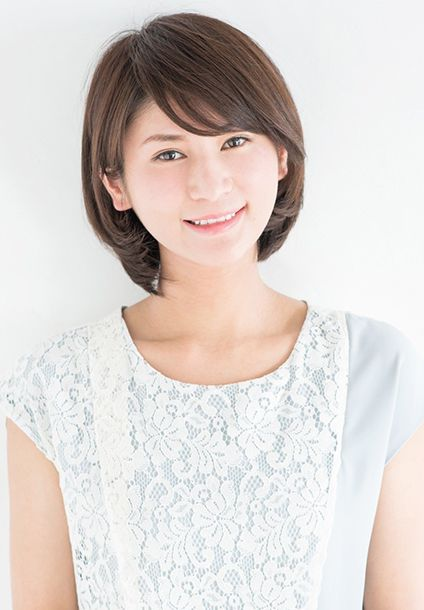
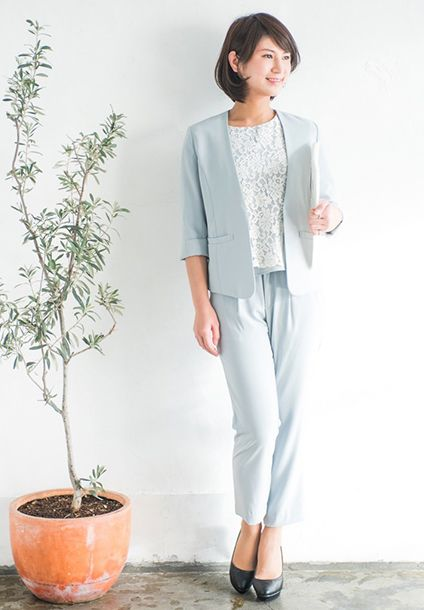

PROFILE
香取優希




経歴
レギュラー
- ハーレーファンライドラリー公式イベントサポーターMC（2019年6月～）
- 増田経済研究所「テレビQ&A」アシスタント（2018年7月～）
- サノフィWeb Conferenceナビゲーター（2017年～）
MA
- トイザらスアプリ「ジェフリーの冒険」ナレーション、キャラボイス
式典/発表会
- COREDO室町テラスオープニングセレモニー
- 日清フーズ株式会社2020年春の新製品発表会
- デジタルデータソリューション株式会社第21期第1四半期表彰式
- シューティングアームズ開店1周年記念祝賀会
- ゲートシティ大崎20周年記念イベント謝恩会
- 第65回JA全国青年大会（1,000人規模）
- 京成上野駅リニューアル記念式典
- 株式会社AIS第7回『ちゃっかり勤太くん』交流会2019
- 日総工産株式会社社内表彰式ALL NISSO2019
- 小田急電鉄 鶴川駅コンテスト表彰式＆懇親会
- 「One Tap Buy」月額980円定額プラン開始記者発表会（NONSTYLE井上祐介）
- 明祥50周年記念感謝祭
- 株式会社STnet愛媛支店開設30周年記念
- コカ・コーラボトラーズ株式会社マーケティング発表会
- 東京モーターショー2017開催概要発表会 影ナレ
- カシオ計算機株式会社タフネスカメラ新製品発表会 影ナレ
- フェニックスグループ創業30周年記念パーティー
- Cisco Partner Conference Japan2017 表彰式
- Dia de Muertos Tokyo2017
- シーケーエンジニアリングミャンマー開所祝賀会
- 地方自治法施行70周年記念（1,000人以上規模）
- 監査事務功労者総務大臣表彰式（1,000人以上規模）
- HTC新製品発表会
- おもちゃショー/タカラトミー記者発表会
- パレス立川試食会
- ブライダル挙式、人前式、披露宴 450本以上
イベントMC
- 浅草オレンジ通りクリスマスフェア2019
- TICAD7アフリカ開発会議音楽交流イベント
- ビックカメラ×ソフトバンク ゆるめるモ!プレミアムイベント（ゆるめるモ!）
- ラグビーW杯2019日本大会パブリックビューイング
- 2019年度鎌菱会大運動会
- 京葉ガス展
- JA全農チビリンピック2019イベントステージ（アニマル浜口、浜口京子、八木かなえ、石川佳純、高橋尚子、里崎智也、貴乃花光司、北澤豪）
- イオンレイクタウン防災フェス2019
- イオンモールFSCイベント
- 第一回ゼクシィフェスタ首都圏
- グランドニッコー東京台場 2019New Yearイベント
- 浅草オレンジ通りクリスマスフェア2018
- ハーゲンダッツイベント
- 東京メトロ すすメトロイベント
- Max&Coトークイベント（クリス・ウェブ佳子、スタイリスト朝倉豊）
- WOMAN EXPO TOKYO 2018（美優、株式会社ナイガイPR担当可児淳子）
- URUNA×宝島社「steady」スペシャル美脚イベント（美優、steady編集長）
- タカラトミー主催「アイドル×戦士 ミラクルちゅーんず！」トークイベント
- 藤棚商店街さくらまつりイベントステージ
- 富士通Make Sence春 in アークヒルズさくらまつりナビゲーター
- 株式会社セキュアソフト「セキュリティフェア2018」プレゼンNA
- ルミネ・ザ・バーゲン
- サマーフェスタ2017
- タカラトミー商談会「キャラクターEXPO2017」
- タカラトミー春の新キャラクター発表会 NACO
- mineo渋谷オープン記念イベント＠SHIBUYA109
- HUAHEI SIMフリースマートフォンプロモーション
- 七五三
- 鈴鹿サーキットイベントステージ（ドライバーやレースクイーンへのインタビューなど）
- キッズサンタコンテスト
- 地方統一選挙2019ウグイス嬢
- 参議院選挙2019ウグイス嬢
- 都議選2017ウグイス嬢
- 衆議院選挙ウグイス嬢
ショーモデル
- SHARP新製品発表会
- エスティーローダーメイクモデル
- シュウウエムラメイクコンテスト、メイクモデル
- キヤノンカメラ記者発表会
雑誌/新聞
- maria
- 髪姫
- 関西Walker
- 関西じゃらん
- lee
- ゼクシィ
- 中日新聞
- スポーツJAPAN(日本体育教会)
その他
- 鈴鹿サーキットクイーン
- 週刊少年チャンピオン月例賞期待賞受賞
- 株式会社ガーディアン マニュアル漫画「Let's Web育」作画
- SNS用デイリー漫画「OTA Cool Popy」執筆中（約4,000フォロワー）
cm/VP
- 生活クラブweb-cm メイン ママ役
- 第一三共ヘルスケア「ロキソニンSプレミアム」TVcm
- SMAP「top of the world」MV
- 通販生活WEB動画 メイン
- みずほ銀行トレインチャンネル 講師役
- ニチバン中国向けWEB動画リポーター
- 東京モーターショー2017/UDトラックス リポーター
- 酒井形成外科webムービー スタッフ、インタビュアー役
- cococarat東南アジア専門海外就職支援サービスWEBcm
ラジオ
- インターネットラジオSORA×NIWA「鈴木みのるのマンガ王におれはなる!」ゲスト出演
- インターネットラジオSORA×NIWA「ノーチンのGolden Step」ゲスト出演
- zip fm ゲスト出演
- エフエム愛知 ゲスト出演
- エフエム三重 ゲスト出演
セミナー
- 独立行政法人自動車技術総合機構研究発表会フォーラム2019
- VMware Cloud Village
- 高松建設株式会社不動産業者様向け特別セミナー、懇親会
- ベルフェイス株式会社セミナー
- カシオ計算機株式会社セミナー
- intel&AEON インダストリー IoTカンファレンス
- Siemensセミナー
- Brightcove PLAY 2017 分科会
- BTL Japan 東京自社セミナー
- 日経プラスワンフォーラム
- Brother World JAPAN2018 for Business
展示会NA/MC
- 野村IR資産運用フェア2019/野村アセットマネジメント
- エコプロ2019/環境再生保全機構
- IIFES2019/明電舎
- Inter BEE2019/d&b audiotechnik Japan K.K
- JAPAN PACK2019/ノードソン
- Japan IT Week 秋/クオカード
- CEATEC JAPAN2019/IPA（情報処理推進機構）
- 日経Xtech Expo 2019/Dropbox
- セブンイレブン新商品展示会2019秋/リテールシステムサービス
- 東京マラソンエキスポ2019/スターツ
- JAPANSHOP2019/凸版印刷
- カーエレクトロニクス展2019/UKCホーリディングス
- 自治体総合フェア2019/東京電力グループ・パナソニック
- JAPANドラッグストアショー2018～2019/シオノギヘルスケア
- インターロップ2018/トレンドマイクロ
- プラントメンテナンスショー2018/ラヴックス
- 下水道展18北九州/三機工業
- 住宅ビル施設week2018/凸版印刷
- HOSPEX JAPAN2018/田島ルーフィング
- カーエレクトロニクス展2018/UKCホールディングス
- ジャパンゴルフフェア2018/ミズノ
- ビューティーワールドジャパン2018/エステプロ・ラボ
- 第15回情報セキュリティEXPO/トレンドマイクロ
- 東京おもちゃショー/タカラトミー（記者発表会ゲスト：筧美和子、ピスタチオ、パンサー、鈴木奈々、アイドル×戦士ミラクルちゅーんず！、小野真弓）イベントステージゲスト：NONSTYLE、尼神インター、スリムクラブ、橋爪紋佳、鳥居みゆき、横澤夏子）
- 鉄道技術展2017/日鉄住金物産
- CEATEC JAPAN2017/HATS PLAZA（完パケ）
- ハムフェア2017/アイコム
- セキュリティーショー2017/ティーピーアイ（完パケ）
- JAPAN IT WEEK/PURE STORAGE
- インターフェックスJAPAN2017～2018/竹中工務店
- 設計製造ソリューション/東京貿易テクノシステム
カタログ/パンフレットモデル
- 乗馬クラブ「クレイン」
- 千趣会
- スターゲイトホテル
- 佐川急便
- 赤ちゃん本舗
- ヨドコウ
- 株式会社モビメント関西「P-style」
- L'OREAL
- ローム株式会社
- ライトウォーカー
- YAMAHA「Sea Style」
- 名古屋商科大学 駅校内広告、パンフレット
WEBモデル
- スポレッシュ太田店WEB スタッフ役
- 赤坂ビューティークリニック施術モデル
- J-cell顔モデル
- プロルート丸光
- エステサロン「ラヴェル」
- KID BLUEイメージモデル
- ユニーク
- Ozmall
- マルイWEBチャンネル
- ミラベラ
- J-Ferry